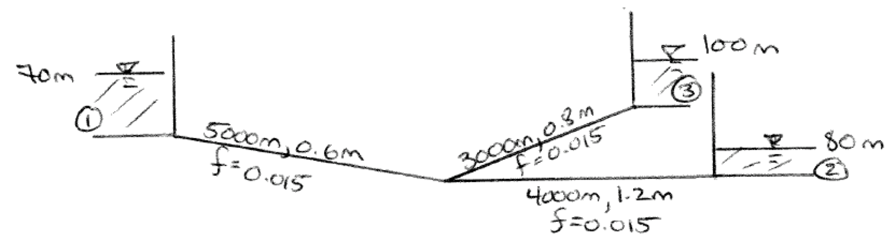

Copyright © DATE Author, all rights reserved
ENGR 1330 Computational Thinking with Data Science
Last GitHub Commit Date:
Lesson 13 Nonlinear Systems of Equations
This lesson will
Objectives
- Construct multivariate non-linear equation systems
- Construct the Jacobian using analytical partial derivatives
- Solve using a Newton-Raphson method
- Construct the Jacobian using finite-difference approximations of the partial derivatives
- Demonstrate practical application with a pipeline network
Nonlinear Systems of Equations
Non-linear systems are extensions of the linear systems cases except the systems involve products and powers of the unknown variables. Non-linear problems are often quite difficult to manage, especially when the systems are large (many rows and many variables). The solution to non-linear systems, if non-trivial or even possible, are usually iterative. Within the iterative steps is a linearization component – these linear systems which are intermediate computations within the overall solution process are treated by an appropriate linear system method (direct or iterative). Consider the system below:
Suppose we have a solution guess , which of course could be wrong, but we could linearize about that guess as
Now if we assemble the system in the usual fashion, we have a system of linear equations\footnote{Linear in }, which expanded look like:
Now that the system is linear, and we can solve for using our linear system solver for the new guess. If the system is convergent (not all are) then if we update, and repeat we will eventually find a result.
What one really needs is a way to construct the linear system that has a systematic update method, that is discussed below
Multiple-variable extension of Newton’s Method
This section presents the Newton-Raphson method as a way to sometimes solve systems of non-linear equations.
Consider an example where the function \textbf{f} is a vector-valued function of a vector argument.
Let's also recall Newtons method for scalar valued function of a single variable.
When extending to higher dimensions, the analog for is the vector \textbf{x} and the analog for the function is the vector function \textbf{f()}. What remains is an analog for the first derivative in the denominator (and the concept of division of a matrix).
The analog to the first derivative is a matrix called the Jacobian which is comprised of the first derivatives of the function \textbf{f} with respect to the arguments \textbf{x}.
For example for a 2-value function of 2 arguments (as our example above)
Next recall that division is replaced by matrix multiplication with the multiplicative inverse, so the analogy continues as
Let's name the Jacobian \textbf{J(x)}.
So the multi-variate Newton's method can be written as
In the linear systems lessons we did find a way to solve for an inverse, but it's not necessary, and is computationally expensive to invert in these examples -- a series of rearrangement of the system above yields a nice scheme that does not require inversion of a matrix.
First, move the to the left-hand side.
Next multiply both sides by the Jacobian (The Jacobian must be non-singular otherwise we are dividing by zero)
Recall a matrix multiplied by its inverse returns the identity matrix (the matrix equivalent of unity)
So we now have an algorithm:
1) Start with an initial guess , compute , and .
2) Test for stopping. Is close to zero? If yes, exit and report results, otherwise continue.
3) Solve the linear system .
4) Test for stopping. Is close to zero? If yes, exit and report results, otherwise continue.
5) Compute the update , then
6) Move the update into the guess vector =and repeat step 1. Stop after too many steps.
Example using Analytical Derivatives
Now to complete the example we will employ this algorithm.
The function (repeated)
Then the Jacobian, here we will compute it analytically because we can
Now for the scripts.
We will start by defining the two equations, and their derivatives, as well a a vector valued function func and its Jacobian jacob as below. Here the two modules LinearSolverPivot and vector_matrix_lib are just python source code files containing prototype functions.
#################################################################
# Newton Solver Example -- Analytical Derivatives #
#################################################################
import math # This will import math module from python distribution
from LinearSolverPivot import linearsolver # This will import our solver module
from vector_matrix_lib import writeM,writeV,vdotv,vvsub # This will import our vector functions
def eq1(x,y):
eq1 = x**2 + y**2 - 4.0
return(eq1)
def eq2(x,y):
eq2 = math.exp(x) + y - 1.0
return(eq2)
def ddxeq1(x,y):
ddxeq1 = 2.0*x
return(ddxeq1)
def ddyeq1(x,y):
ddyeq1 = 2.0*y
return(ddyeq1)
def ddxeq2(x,y):
ddxeq2 = math.exp(x)
return(ddxeq2)
def ddyeq2(x,y):
ddyeq2 = 1.0
return(ddyeq2)
def func(x,y):
func = [0.0 for i in range(2)] # null list
# build the function
func[0] = eq1(x,y)
func[1] = eq2(x,y)
return(func)
def jacob(x,y):
jacob = [[0.0 for j in range(2)] for i in range(2)] # constructed list
#build the jacobian
jacob[0][0]=ddxeq1(x,y)
jacob[0][1]=ddyeq1(x,y)
jacob[1][0]=ddxeq2(x,y)
jacob[1][1]=ddyeq2(x,y)
return(jacob)
Next we create vectors to store values, and supply initial guesses to the system, and echo the inputs.
deltax = [0.0 for i in range(2)] # null list
xguess = [0.0 for i in range(2)] # null list
myfunc = [0.0 for i in range(2)] # null list
myjacob = [[0.0 for j in range(2)] for i in range(2)] # constructed list
# supply initial guess
xguess[0] = float(input("Value for x : "))
xguess[1] = float(input("Value for y : "))
# build the initial function
myfunc = func(xguess[0],xguess[1])
#build the initial jacobian
myjacob=jacob(xguess[0],xguess[1])
#write initial results
writeV(xguess,2,"Initial X vector ")
writeV(myfunc,2,"Initial FUNC vector ")
writeM(myjacob,2,2,"Initial Jacobian ")
# solver parameters
tolerancef = 1.0e-9
tolerancex = 1.0e-9
Value for x : 1
Value for y : 2
------ Initial X vector ------
1.0
2.0
-----------------------------
------ Initial FUNC vector ------
1.0
3.7182818284590446
-----------------------------
------ Initial Jacobian ------
[2.0, 4.0]
[2.718281828459045, 1.0]
-----------------------------
Now we apply the algorithm a few times, here the count is set to 10. So eneter the loop, test for stopping, then update.
# Newton-Raphson
for iteration in range(10):
myfunc = func(xguess[0],xguess[1])
testf = vdotv(myfunc,myfunc,2)
if testf <= tolerancef :
print("f(x) close to zero\n test value : ", testf)
break
myjacob=jacob(xguess[0],xguess[1])
deltax=linearsolver(myjacob,myfunc)
testx = vdotv(deltax,deltax,2)
if testx <= tolerancex :
print("solution change small\n test value : ", testx)
break
xguess=vvsub(xguess,deltax,2)
## print("iteration : ",iteration)
## writeV(xguess,2,"Current X vector ")
## writeV(myfunc,2,"Current FUNC vector ")
print("Exiting Iteration : ",iteration)
writeV(xguess,2,"Exiting X vector ")
writeV(myfunc,2,"Exiting FUNC vector ")
solution change small
test value : 2.1803484657072266e-10
Exiting Iteration : 5
------ Exiting X vector ------
-1.8162775103511606
0.8373739123240562
-----------------------------
------ Exiting FUNC vector ------
5.90636483064344e-05
3.926422552424924e-06
-----------------------------
Quasi-Newton Method using Finite Difference Approximations for the Derivative
The next variant is to approximate the derivatives -- usually a Finite-Difference approximation is used, either forward, backward, or centered differences -- generally determined based on the actual behavior of the functions themselves or by trial and error.
For really huge systems, we usually make the program itself make the adaptions as it proceeds.
The coding for a finite-difference representation of a Jacobian is shown in Listing that follows
In constructing the Jacobian, we observe that each column of the Jacobian is simply the directional derivative of the function with respect to the variable associated with the column.
For instance, the first column of the Jacobian in the example is first derivative of the first function (all rows) with respect to the first variable, in this case . The second column is the first derivative of the second function with respect to the second variable, .
This structure is useful to generalize the Jacobian construction method because we could write (yet another) prototype function that can take the directional derivatives for us, and just insert the returns as columns; in the example we simply modified the ddx and ddy functions from analytical to simple finite differences.
The example listing is specific to the 2X2 function in the example, but the extension to more general cases is evident.
#################################################################
# Newton Solver Example -- Numerical Derivatives #
#################################################################
import math # This will import math module from python distribution
from LinearSolverPivot import linearsolver # This will import our solver module
from vector_matrix_lib import writeM,writeV,vdotv,vvsub # This will import our vector functions
def eq1(x,y):
eq1 = x**2 + y**2 - 4.0
return(eq1)
def eq2(x,y):
eq2 = math.exp(x) + y - 1.0
return(eq2)
##############################################################
# This portion is changed for finite-difference method to evaluate derivatives #
##############################################################
def ddxeq1(x,y):
delta = 1.0e-6
ddxeq1 = (eq1(x+delta,y)-eq1(x,y))/delta
return(ddxeq1)
def ddyeq1(x,y):
delta = 1.0e-6
ddyeq1 = (eq1(x,y+delta)-eq1(x,y))/delta
return(ddyeq1)
def ddxeq2(x,y):
delta = 1.0e-6
ddxeq2 = (eq2(x+delta,y)-eq2(x,y))/delta
return(ddxeq2)
def ddyeq2(x,y):
delta = 1.0e-6
ddyeq2 = (eq2(x,y+delta)-eq2(x,y))/delta
return(ddyeq2)
##############################################################
def func(x,y):
func = [0.0 for i in range(2)] # null list
# build the function
func[0] = eq1(x,y)
func[1] = eq2(x,y)
return(func)
def jacob(x,y):
jacob = [[0.0 for j in range(2)] for i in range(2)] # constructed list
#build the jacobian
jacob[0][0]=ddxeq1(x,y)
jacob[0][1]=ddyeq1(x,y)
jacob[1][0]=ddxeq2(x,y)
jacob[1][1]=ddyeq2(x,y)
return(jacob)
deltax = [0.0 for i in range(2)] # null list
xguess = [0.0 for i in range(2)] # null list
myfunc = [0.0 for i in range(2)] # null list
myjacob = [[0.0 for j in range(2)] for i in range(2)] # constructed list
# supply initial guess
xguess[0] = float(input("Value for x : "))
xguess[1] = float(input("Value for y : "))
# build the initial function
myfunc = func(xguess[0],xguess[1])
#build the initial jacobian
myjacob=jacob(xguess[0],xguess[1])
#write initial results
writeV(xguess,2,"Initial X vector ")
writeV(myfunc,2,"Initial FUNC vector ")
writeM(myjacob,2,2,"Initial Jacobian ")
# solver parameters
tolerancef = 1.0e-9
tolerancex = 1.0e-9
# Newton-Raphson
for iteration in range(10):
myfunc = func(xguess[0],xguess[1])
testf = vdotv(myfunc,myfunc,2)
if testf <= tolerancef :
print("f(x) close to zero\n test value : ", testf)
break
myjacob=jacob(xguess[0],xguess[1])
deltax=linearsolver(myjacob,myfunc)
testx = vdotv(deltax,deltax,2)
if testx <= tolerancex :
print("solution change small\n test value : ", testx)
break
xguess=vvsub(xguess,deltax,2)
## print("iteration : ",iteration)
## writeV(xguess,2,"Current X vector ")
## writeV(myfunc,2,"Current FUNC vector ")
print("Exiting Iteration : ",iteration)
writeV(xguess,2,"Exiting X vector ")
writeV(myfunc,2,"Exiting FUNC vector using Finite-Differences")
Value for x : 1
Value for y : 2
------ Initial X vector ------
1.0
2.0
-----------------------------
------ Initial FUNC vector ------
1.0
3.7182818284590446
-----------------------------
------ Initial Jacobian ------
[2.0000010003684565, 4.0000010006480125]
[2.718283187874704, 1.0000000010279564]
-----------------------------
solution change small
test value : 2.1800662368653786e-10
Exiting Iteration : 5
------ Exiting X vector ------
-1.8162775096127992
0.8373739116345714
-----------------------------
------ Exiting FUNC vector using Finite-Differences ------
5.905981145470918e-05
3.925853147235259e-06
-----------------------------
Exercises
Write a script that forward defines the multi-variate functions and implements the Newton-Raphson technique. Implement the method, using analytical derivatives, and find a solution to:
Repeat the exercise, except use finite-differences to approximate the derivatives.
Write a script that forward defines the multi-variate functions and implements the Newton-Raphson technique. Implement the method, using analytical derivatives, and find a solution to:
Repeat the exercise, except use finite-differences to approximate the derivatives.
Write a script that forward defines the multi-variate functions and implements the Newton-Raphson technique. Implement the method, using analytical derivatives, and find a solution to:
Repeat the exercise, except use finite-differences to approximate the derivatives.
Branched System 3-Reservoir Example
Consider the branched system shown in below. In this example the friction factor is assumed constant for simplicity, but in practice would vary during the solution computations.

The hydraulics question is what is the discharge in each pipe and what is the total head at the junction (notice we don't know the junction elevation in this example --- if the elevation were specified, we could also find the pressure head).
Solution Approach
First populate the four equations with the appropriate numerical values.
Next, compute all the constants, and organize the 4 equations into a system of simultaneous equations
Because the system is non-linear we need to employ some appropriate method, herein we will use a Quasi-Newton method with numerical approximations to derivatives.
First a more conventional vector-matrix structure
Apply the multiple-variable Extension of Newton’s Method
The solution can use the methods directly from ENGR-1330 and similar courses, here we just implement the methods. A very brief explaination is in the readings, but multi-variable Newton's method is usually taught in calculus.
Here we will define some support modules linearsolver() and vector_matrix_lib which are just python source code containing prototype functions which are embedded into the notebook, but ordinarily would save them in separate file and use import.
# SolveLinearSystem.py
# Code to read A and b
# Then solve Ax = b for x by Gaussian elimination with back substitution
##########
def linearsolver(A,b):
n = len(A)
# M = A #this is object to object equivalence
# copy A into M element by element
M=[[0.0 for jcol in range(n)]for irow in range(n)]
for irow in range(n):
for jcol in range(n):
M[irow][jcol]=A[irow][jcol]
i = 0
for x in M:
x.append(b[i])
i += 1
for k in range(n):
for i in range(k,n):
if abs(M[i][k]) > abs(M[k][k]):
M[k], M[i] = M[i],M[k]
else:
pass
for j in range(k+1,n):
q = float(M[j][k]) / M[k][k]
for m in range(k, n+1):
M[j][m] -= q * M[k][m]
x = [0 for i in range(n)]
x[n-1] =float(M[n-1][n])/M[n-1][n-1]
for i in range (n-1,-1,-1):
z = 0
for j in range(i+1,n):
z = z + float(M[i][j])*x[j]
x[i] = float(M[i][n] - z)/M[i][i]
# print (x)
return(x)
# vector_matrix_lib.py
# useful linear algebra tools
import math # This will import math module
def writeM(M,ir,jc,label):
print ("------",label,"------")
for i in range(0,ir,1):
print (M[i][0:jc])
print ("-----------------------------")
#return
def writeV(V,ir,label):
print ("------",label,"------")
for i in range(0,ir,1):
print (V[i])
print ("-----------------------------")
#return
def mmmult(amatrix,bmatrix,rowNumA,colNumA,rowNumB,colNumB):
AB =[[0.0 for j in range(colNumB)] for i in range(rowNumA)]
for i in range(0,rowNumA):
for j in range(0,colNumB):
for k in range(0,colNumA):
AB[i][j]=AB[i][j]+amatrix[i][k]*bmatrix[k][j]
return(AB)
def mvmult(amatrix,xvector,rowNumA,colNumA):
bvector=[0.0 for i in range(rowNumA)]
for i in range(0,rowNumA):
for j in range(0,1):
for k in range(0,colNumA):
bvector[i]=bvector[i]+amatrix[i][k]*xvector[k]
return(bvector)
def vvadd(avector,bvector,length):
aplusb=[0.0 for i in range(length)]
for i in range(length):
aplusb[i] = avector[i] + bvector[i]
return(aplusb)
def vvsub(avector,bvector,length):
aminusb=[0.0 for i in range(length)]
for i in range(length):
aminusb[i] = avector[i] - bvector[i]
return(aminusb)
def vdotv(avector,bvector,length):
adotb=0.0
for i in range(length):
adotb=adotb+avector[i]*bvector[i]
return(adotb)
Next we define the four equations, as well a a vector valued function func and its Jacobian jacob as below.
#################################################################
# Newton Solver Example -- Numerical Derivatives #
#################################################################
import math # This will import math module from python distribution
#from LinearSolverPivot import linearsolver # This will import our solver module
#from vector_matrix_lib import writeM,writeV,vdotv,vvsub # This will import our vector functions
def eq1(x1,x2,x3,x4):
eq1 = 1*x1 + 6.377*x2 +0*x3 + 0*x4 - 70
return(eq1)
def eq2(x1,x2,x3,x4):
eq2 = 1*x1 + 0*x2 +2.869*x3 + 0*x4 - 100
return(eq2)
def eq3(x1,x2,x3,x4):
eq3 = 1*x1 + 0*x2 +0*x3 + -2.551*x4 -80
return(eq3)
def eq4(x1,x2,x3,x4):
eq4 = 0*x1 + 0.2827*x2 +0.5026*x3 + -1.1309*x4 - 0
return(eq4)
##############################################################
def func(x1,x2,x3,x4):
func = [0.0 for i in range(4)] # null list
# build the function
func[0] = eq1(x1,x2,x3,x4)
func[1] = eq2(x1,x2,x3,x4)
func[2] = eq3(x1,x2,x3,x4)
func[3] = eq4(x1,x2,x3,x4)
return(func)
def jacob(x1,x2,x3,x4):
jacob = [[0.0 for j in range(4)] for i in range(4)] # constructed list
#build the jacobian
jacob[0][0]=1
jacob[0][1]=6.377*x2
jacob[0][2]=0
jacob[0][3]=0
jacob[1][0]=1
jacob[1][1]=0
jacob[1][2]=2.869*x3
jacob[1][3]=0
jacob[2][0]=1
jacob[2][1]=0
jacob[2][2]=0
jacob[2][3]=-2.551*x4
jacob[3][0]=0
jacob[3][1]=0.2827
jacob[3][2]=0.5026
jacob[3][3]=-1.1309
return(jacob)
Next we create vectors to store values, and supply initial guesses to the system, and echo the inputs.
deltax = [0.0 for i in range(4)] # null list
xguess = [0.0 for i in range(4)] # null list
myfunc = [0.0 for i in range(4)] # null list
myjacob = [[0.0 for j in range(4)] for i in range(4)] # constructed list
# supply initial guess
xguess[0] = float(input("Value for x1 : "))
xguess[1] = float(input("Value for x2 : "))
xguess[2] = float(input("Value for x3 : "))
xguess[3] = float(input("Value for x4 : "))
# build the initial function
myfunc = func(xguess[0],xguess[1],xguess[2],xguess[3])
#build the initial jacobian
myjacob=jacob(xguess[0],xguess[1],xguess[2],xguess[3])
#write initial results
writeV(xguess,4,"Initial X vector ")
writeV(myfunc,4,"Initial FUNC vector ")
writeM(myjacob,4,4,"Initial Jacobian ")
# solver parameters
tolerancef = 1.0e-9
tolerancex = 1.0e-9
# Newton-Raphson
Value for x1 : 1
Value for x2 : 1
Value for x3 : 1
Value for x4 : 1
------ Initial X vector ------
1.0
1.0
1.0
1.0
-----------------------------
------ Initial FUNC vector ------
-62.623
-96.131
-81.551
-0.3455999999999999
-----------------------------
------ Initial Jacobian ------
[1, 6.377, 0, 0]
[1, 0, 2.869, 0]
[1, 0, 0, -2.551]
[0, 0.2827, 0.5026, -1.1309]
-----------------------------
Now we apply the algorithm a few times, here the count is set to 24. So eneter the loop, test for stopping, then update.
for iteration in range(24):
myfunc = func(xguess[0],xguess[1],xguess[2],xguess[3])
testf = vdotv(myfunc,myfunc,4)
if testf <= tolerancef :
print("f(x) close to zero\n test value : ", testf)
break
myjacob=jacob(xguess[0],xguess[1],xguess[2],xguess[3])
deltax=linearsolver(myjacob,myfunc)
testx = vdotv(deltax,deltax,4)
if testx <= tolerancex :
print("solution change small\n test value : ", testx)
break
xguess=vvsub(xguess,deltax,4)
## print("iteration : ",iteration)
## writeV(xguess,2,"Current X vector ")
## writeV(myfunc,2,"Current FUNC vector ")
print("Exiting Iteration : ",iteration)
writeV(xguess,4,"Exiting X vector ")
writeV(myfunc,4,"Exiting FUNC vector using Finite-Differences")
f(x) close to zero
test value : 2.0273725264180003e-28
Exiting Iteration : 1
------ Exiting X vector ------
84.61708956275575
-2.292157685864162
5.361767318663032
1.8099135879089594
-----------------------------
------ Exiting FUNC vector using Finite-Differences ------
-1.4210854715202004e-14
0.0
0.0
-8.881784197001252e-16
-----------------------------
Now tidy up the output, convert back to discharges (from velocities) and report results.
print("Head at Junction : %.3f" % xguess[0], " feet ")
print("Discharge in Pipe AD: %.3f" % (0.2827 * xguess[1]), " cubic feet per second")
print("Discharge in Pipe BD: %.3f" % (0.5026 * xguess[2]), " cubic feet per second ")
print("Discharge in Pipe DC: %.3f" % (1.1309 * xguess[3]), " cubic feet per second ")
Head at Junction : 84.617 feet
Discharge in Pipe AD: -0.648 cubic feet per second
Discharge in Pipe BD: 2.695 cubic feet per second
Discharge in Pipe DC: 2.047 cubic feet per second